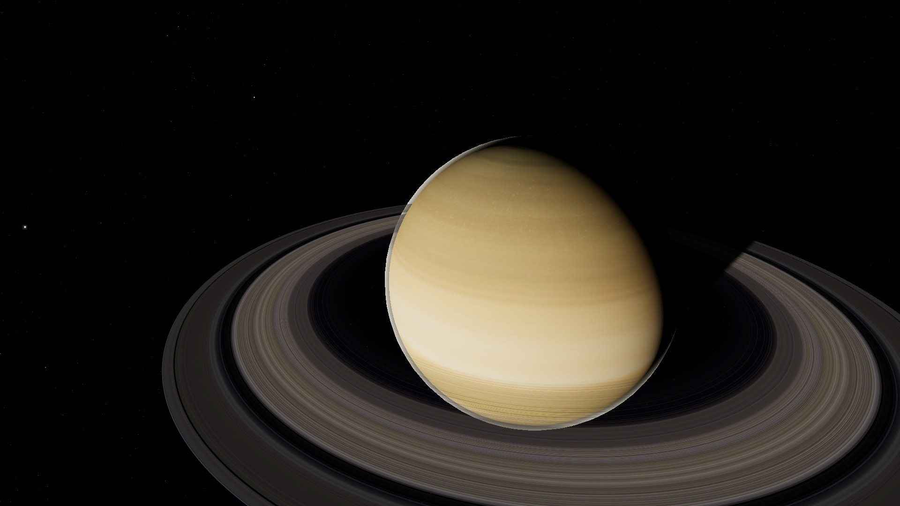
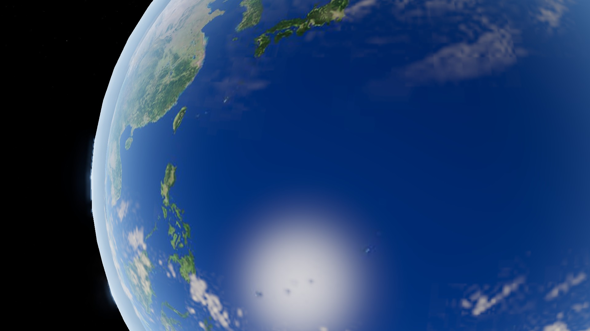

WORKS
作品介紹
星航者
把真實宇宙做成 App
1:1 真實尺度的太空探索遊戲，免費、打開瀏覽器就能玩。

@ailabtw
1/3
WORKS
做了什麼
問題
課本裡的太陽系比例都是假的
行星距離被縮了上百倍，看不出宇宙到底有多大。
做法
一個人＋AI，寫成網頁 App
NASA JPL 軌道即時計算、1.9 萬顆真實恆星、AI 語音旁白。
結果
31 艘太空船、101 個任務
電腦、手機、平板都能玩，手機還能當遙控器。
@ailabtw
2/3
WORKS
數字說話
真實尺度
1:1
任務・7 章
101
艘太空船
31
章〈宇宙的故事〉
19
免費試玩 →
starvoyager.pages.dev
@ailabtw
3/3
WORKS
作品介紹
星航者
飛遍真實宇宙

連結貼紙放這裡（starvoyager.pages.dev）
@ailabtw